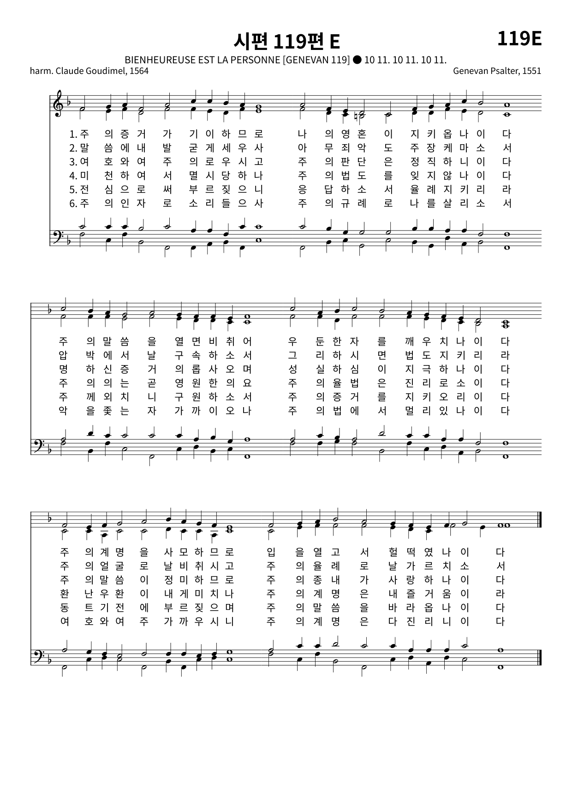

Psalm 119E
BIENHEUREUSE EST LA PERSONNE [GENEVAN 119] · 10 11. 10 11. 10 11.
English title: How Blessed Are Those Upright in the Way
Tune: Genevan Psalter, 1551 · Harmony: Claude Goudimel, 1564 · Lyrics: Korean adaptation of Psalm 119 from the Korean Revised Version (AI draft adaptation · not yet theologically reviewed) · 6 stanzas
Psalm 119 is divided into 6 tunes: A B C D E F · This tune contains stanzas 33–38 of the Psalm 119 lyrics.
Score PDF MusicXML (for printing) MusicXML (for accompaniment, with prelude and repeats) Read Psalm 119 (Korean Revised Version)
Score
← Psalm 119D ListAccompaniment (in preparation)Psalm 119F →
Lyrics (Korean)
Stanza 1
주의 증거가 기이하므로
나의 영혼이 지키옵나이다
주의 말씀을 열면 비취어
우둔한 자를 깨우치나이다
주의 계명을 사모하므로
입을 열고서 헐떡였나이다
주의 증거가 기이하므로
나의 영혼이 지키옵나이다
주의 말씀을 열면 비취어
우둔한 자를 깨우치나이다
주의 계명을 사모하므로
입을 열고서 헐떡였나이다
Stanza 2
말씀에 내 발 굳게 세우사
아무 죄악도 주장케 마소서
압박에서 날 구속하소서
그리하시면 법도 지키리라
주의 얼굴로 날 비취시고
주의 율례로 날 가르치소서
말씀에 내 발 굳게 세우사
아무 죄악도 주장케 마소서
압박에서 날 구속하소서
그리하시면 법도 지키리라
주의 얼굴로 날 비취시고
주의 율례로 날 가르치소서
Stanza 3
여호와여 주 의로우시고
주의 판단은 정직하니이다
명하신 증거 의롭사오며
성실하심이 지극하나이다
주의 말씀이 정미하므로
주의 종 내가 사랑하나이다
여호와여 주 의로우시고
주의 판단은 정직하니이다
명하신 증거 의롭사오며
성실하심이 지극하나이다
주의 말씀이 정미하므로
주의 종 내가 사랑하나이다
Stanza 4
미천하여서 멸시 당하나
주의 법도를 잊지 않나이다
주의 의는 곧 영원한 의요
주의 율법은 진리로소이다
환난 우환이 내게 미치나
주의 계명은 내 즐거움이라
미천하여서 멸시 당하나
주의 법도를 잊지 않나이다
주의 의는 곧 영원한 의요
주의 율법은 진리로소이다
환난 우환이 내게 미치나
주의 계명은 내 즐거움이라
Stanza 5
전심으로써 부르짖으니
응답하소서 율례 지키리라
주께 외치니 구원하소서
주의 증거를 지키오리이다
동트기 전에 부르짖으며
주의 말씀을 바라옵나이다
전심으로써 부르짖으니
응답하소서 율례 지키리라
주께 외치니 구원하소서
주의 증거를 지키오리이다
동트기 전에 부르짖으며
주의 말씀을 바라옵나이다
Stanza 6
주의 인자로 소리 들으사
주의 규례로 나를 살리소서
악을 좇는 자 가까이 오나
주의 법에서 멀리 있나이다
여호와여 주 가까우시니
주의 계명은 다 진리니이다
주의 인자로 소리 들으사
주의 규례로 나를 살리소서
악을 좇는 자 가까이 오나
주의 법에서 멀리 있나이다
여호와여 주 가까우시니
주의 계명은 다 진리니이다